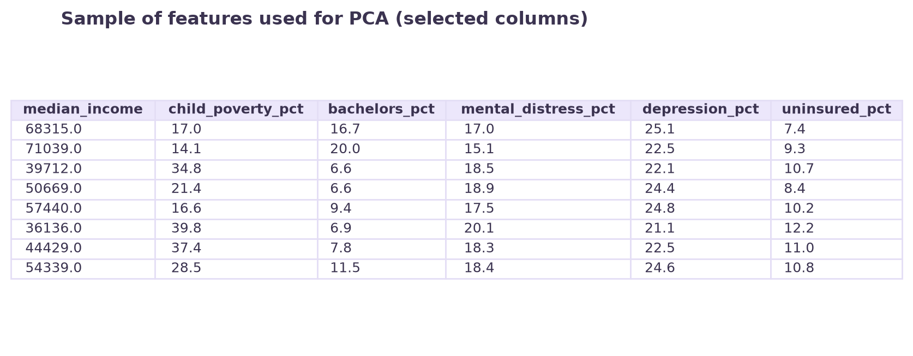
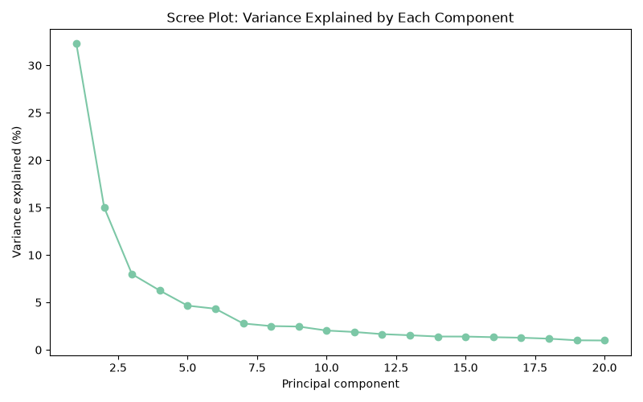
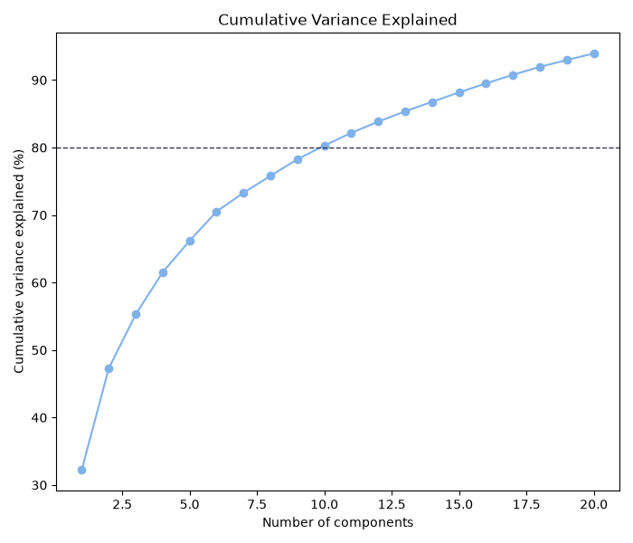
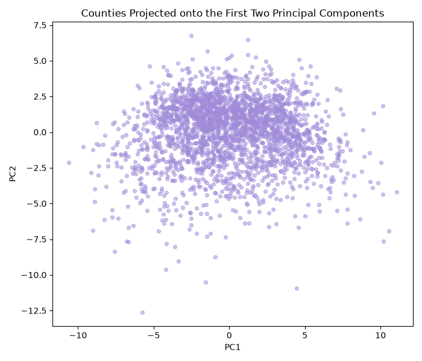
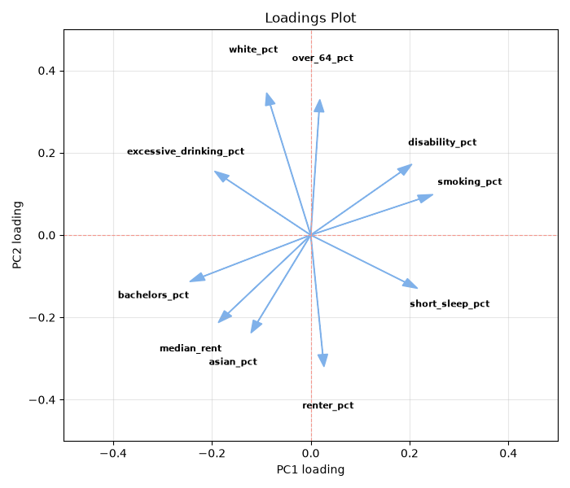
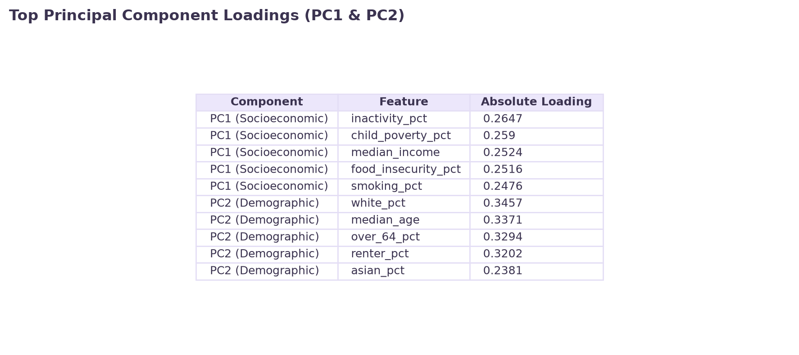
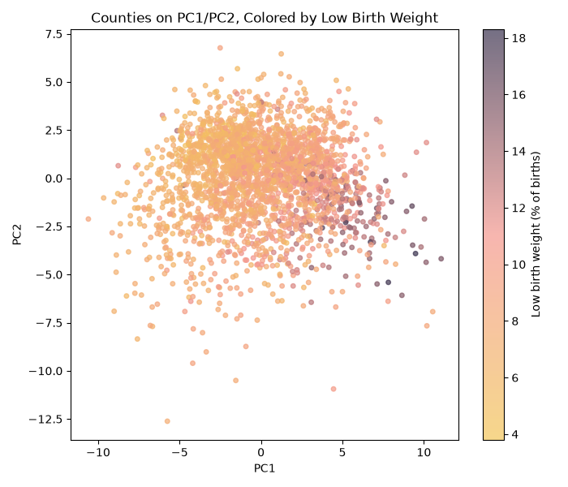

Overview
Principal Component Analysis (PCA) is a type of unsupervised learning, used to mathematically transform large, correlated datasets into a smaller set of new uncorrelated variables. These variables are called principal components. They retain as much of the original data’s variation as possible. This is done via the process of compressing data by reducing the amount of input features. It does not analyze all the variables individually but rather looks at their most essential underlying patterns.
Utilizing PCA on this data is necessary as there are 35 different variables, resulting in large dimensionality. As the dimensions increase the data becomes more spread out and sparse, making distance metric less meaningful. This further causes models to overfit, therefore reducing the dimensions is ideal. This helps to reduce statistical noise and simplifies the computational analysis. This math relies on eigenvectors, which represent the exact directions of highest variance in the data, serving as the Principal Components. The accompanying eigenvalues represent the actual amount of variance that exists in those specific directions. A higher eigenvalue means its corresponding eigenvector captures a larger portion of the dataset's overall information


Data
Prepared dataset: clean_unlabeled_numeric.csv. Raw data: raw_data folder.
PCA relies on calculating variances and geometric distances, therefore it requires continuous, unlabeled numeric data. For this reason, the 35 structural features were standardized, and the outcome variable (low birth weight) was removed before the algorithm was run. Because PCA is an unsupervised technique meant to discover organic structural patterns, the birth weight data was held out entirely.


images/pca_data_sample.png. You can reuse images/clean_sample.png from DataPrep_EDA, or make a new small image of just the scaled/numeric columns actually fed into PCA.Code
Code: pca.py. Language: Python. Core packages: pandas, numpy, scikit-learn (StandardScaler, PCA), matplotlib.
The PCA successfully reduced the 35-dimensional dataset into a much simpler space. PC1 alone explains about 32% of the variance, while PC2 explains an additional 15%. Together PC1 and PC2 explain about 47% of all the structural variation across U.S. counties. PC1 is heavily driven by socioeconomic and behavioral distress, specifically high inactivity and child poverty. PC2 is driven by demographics and housing, specifically median age and renter percentage. When these counties are plotted in 2D space, they form one single continuous cloud. Once this is overlaid with low-birth-weight percentages, there is a stark gradient that appears. It seems that counties with the highest rates of low birth weight are heavily concentrated on the positive side of PC1.
Results
The PCA successfully reduced the 35-dimensional dataset into a much simpler space. PC1 alone explains about 32% of the variance, while PC2 explains an additional 15%. Together PC1 and PC2 explain about 47% of all the structural variation across U.S. counties. PC1 is heavily driven by socioeconomic and behavioral distress, specifically high inactivity and child poverty. PC2 is driven by demographics and housing, specifically median age and renter percentage. When these counties are plotted in 2D space, they form one single continuous cloud. Once this is overlaid with low-birth-weight percentages, there is a stark gradient that appears. It seems that counties with the highest rates of low birth weight are heavily concentrated on the positive side of PC1. Furthermore, it takes exactly 17 components to capture 90% of the cumulative variance, cutting the dimensions of the dataset in half without losing critical information.


images/pca_scree.png (already generated by pca.py).

images/pca_cumulative.png (already generated by pca.py).

images/pca_scores.png (already generated by pca.py).

images/pca_loadings.png (already generated by pca.py).

images/pca_loadings_table.png (already generated by pca.py).

images/pca_outcome_overlay.png (already generated by pca.py).Conclusions
These PCA results demonstrate that the complexity of 35 different community variables can be summarized by a primary socioeconomic component and a secondary demographic component. Crucial findings from this unsupervised learning show that without the knowledge of birth weight, the highest rates of low birth weight align with high scores on PC1. This suggests that structural socioeconomic distress is a driving force behind negative infant health outcomes, outweighing the impact of age and demographic makeup. This visual gradient is confirmed by a strong positive correlation (0.57) between PC1 and the low birth weight percentages.